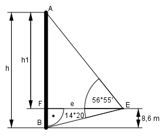

Aufgabe 99 Ein Fenster liegt auf einer Höhe von 8,6 m. Von dort erscheint der Fuß eines Schornsteins unter dem Tiefenwinkel 14°20', die Spitze unter dem Höhenwinkel 56°55'. Wie hoch ist der Schornstein?

20 20’ = ----° = 0,3333° 60 55 55’ = ----° = 0,9167° 60 Im Dreieck FBE: 8,6 m tan 14,3333° = ------- |*e e e * tan 14,3333° = 8,6 m |:tan 14,3333° 8,6 m 8,6 m e = -------------- = --------- = 33,7 m tan 14,3333° 0,2555 Im Dreieck FEA: h1 tan 56,9167° = ----- |*e e e * tan 56,9167° = h1 h1 = 33,7 m * tan 56,9167° = 33,7 m * 1,535 = = 51,5 m h = h1 + 8,6 m = 51,5 m + 8,6 m = 60,1 m